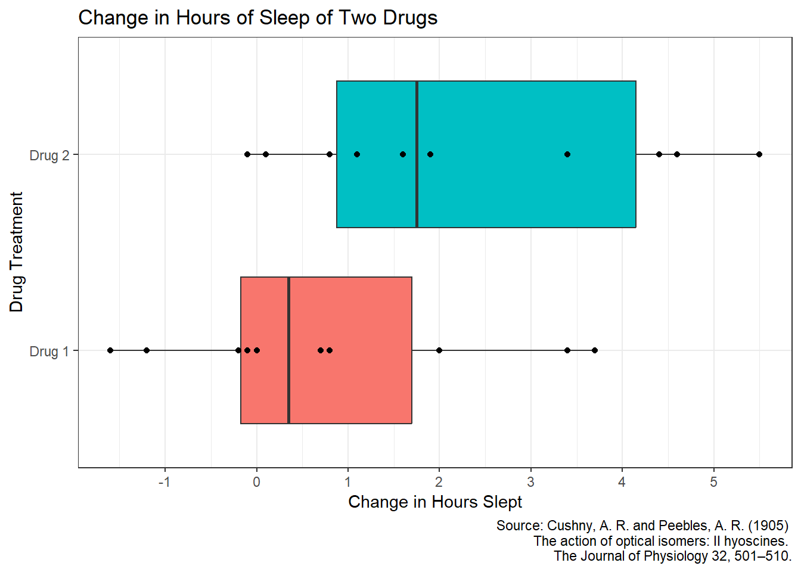

library(tidyverse)Sleep Data Analysis
Intro
For this project, I want to analyse the built in dataset datasets::sleep or Student’s Sleep Data. This dataset contains information about the increase in the number of hours of sleep of two different drugs.
Setup
Using the tidyverse package for data wrangling and ggplot
Exploration
Looking at the overall dataset where “extra” is the number of hours of sleep increase from a drug, “group” confusingly labels which drug is used as a treatment, and “ID” identifies which subject the treatment is applied to.
sleep |>
names()[1] "extra" "group" "ID" sleep |>
head() |>
knitr::kable()| extra | group | ID |
|---|---|---|
| 0.7 | 1 | 1 |
| -1.6 | 1 | 2 |
| -0.2 | 1 | 3 |
| -1.2 | 1 | 4 |
| -0.1 | 1 | 5 |
| 3.4 | 1 | 6 |
Now I want to visualize the data for each drug.
sleep |>
ggplot(aes(x = extra, y = group)) +
geom_boxplot(aes(fill = group)) +
geom_point() +
labs(
title = "Change in Hours of Sleep of Two Drugs",
x = "Change in Hours Slept", y = "Drug Treatment",
caption = "Source: Cushny, A. R. and Peebles, A. R. (1905)
The action of optical isomers: II hyoscines.
The Journal of Physiology 32, 501–510."
) +
theme_bw() +
theme(legend.position = "none") +
scale_y_discrete(labels = c("Drug 1", "Drug 2")) +
scale_x_continuous(breaks = scales::pretty_breaks(n = 8))
From this plot we can see that drug 2 seems a bit better than drug 1 but I want to test if there is a significant difference.
Test Plan
I want to test if there is a significant difference between the true mean change in hours slept for an individual given drug 1 vs drug 2. Because the data is paired by the person given the drug, I can perform a paired t-test to see if there is a significant difference in the change in sleep between the two treatments. I plan to use a significance level of 0.05.
Hypotheses:
\(H_0: \mu_{\text{diff}} = 0\)
\(H_a: \mu_{\text{diff}} \neq 0\)
where \(\mu_{\text{diff}}\) is the difference between the true mean change in hours slept for a person given drug 1 minus drug 2.
Check Normality
Before I can use a paired t-test, I must first ensure the distribution of the differences between the change in hours slept for an individual given drug 1 vs drug 2. First I will set up a vector of the differences for each person.
differences <- sleep |>
arrange(group, ID) |>
with(extra[group == 1] - extra[group == 2])Next I will check to see if the data is approximately normal. To do this I will perform a quick Shapiro-Wilk test for normality with the the traditional significance level of 0.05.
differences |>
shapiro.test()
Shapiro-Wilk normality test
data: differences
W = 0.82987, p-value = 0.03334This gives a p-value of 0.03334 which is less than 0.05 we can say the distributions of differences is approximately normal.
Performing the Test
Now we can perform the paired t-test.
differences |>
t.test(
alternative = "two.sided",
mu = 0,
conf.level = 0.95
)
One Sample t-test
data: differences
t = -4.0621, df = 9, p-value = 0.002833
alternative hypothesis: true mean is not equal to 0
95 percent confidence interval:
-2.4598858 -0.7001142
sample estimates:
mean of x
-1.58 Because the p-value of 0.002833 is less than 0.05 I can say there is significant evidence that there is a difference between the true mean change in hours slept for an individual given drug 1 vs drug 2, and reject the null hypothesis.